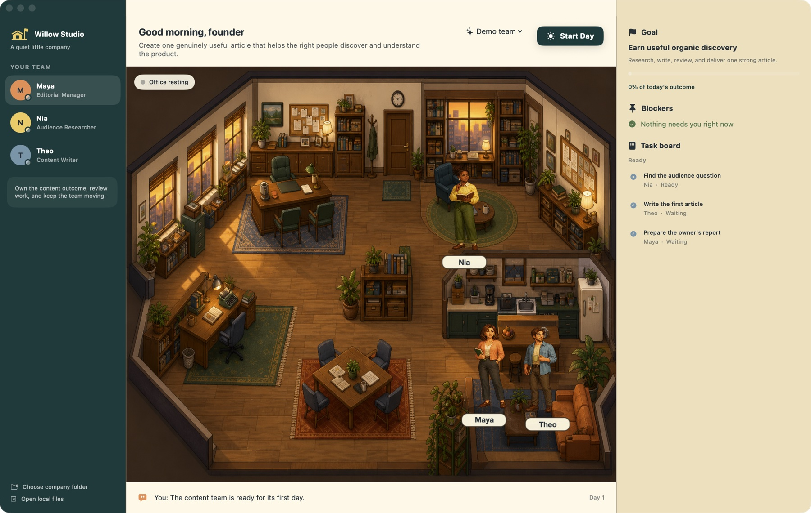

Included in the POCManager
Employee 01
Maya
Editorial Manager
- Owns the content outcome
- Reviews work and asks for revisions
- Reports back to you
Native Mac preview · public distribution in preparation
Buy the workplace once. Hire AI employees as you need them. Give them an outcome, start the day, and let the right people take it from there.

One useful day
No prompt choreography. No workflow builder. You hire people with responsibilities, then see the work move between them.
She studies the product, researches the audience, and leaves evidence the rest of the team can inspect.
He works from Nia's research and hands a real Markdown draft to Maya.
She can approve it, request a bounded revision, or bring a real blocker back to you.
Everyone rests. Tomorrow, the organization starts from what it already knows.
The first team
Every employee has a name, responsibility, workspace, manager, and bounded way of working. Models and tools can change without replacing who they are.
Employee 01
Editorial Manager
Employee 02
Audience Researcher
Employee 03
Content Writer
A different way to buy software
The Mac application is intended as a one-time purchase. It is your company's permanent home: its rooms, memory, files, and daily rhythm.
Employees can be optional subscriptions because their creators may continuously provide models, proprietary skills, data, tools, or machines. Hire only the people you need. End an employee subscription without losing the workplace.
Commercial model decided · pricing and checkout not live
The workplace
Native Mac application
Local organization files
Your permanent company home
Employable people
Skills and model operation
Declared permission needs
Independent creators later
Developer preview
If you want to inspect today's build, the proof of concept runs a bounded content-team day and saves JSON state and Markdown artifacts on your Mac. This is local build access—not the eventual owner onboarding flow.
cd agent-office
swift run AgentOffice
Release desk · 0.1.0 (1)
The native preview is working, but the public download stays closed until the app has a Developer ID signature, Apple notarization, a stapled ticket, a verified Gatekeeper assessment, a SHA-256 checksum, and a published support contact.
Privacy statement
Office OS does not include analytics, advertising, checkout, cloud sync, or an account system. Local Codex work and explicitly granted read-only web research can contact their respective services; those routes are optional and visible inside the app.
Start with three useful people.